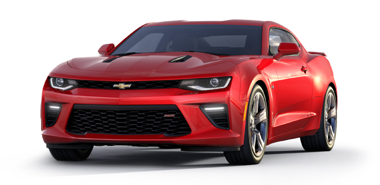
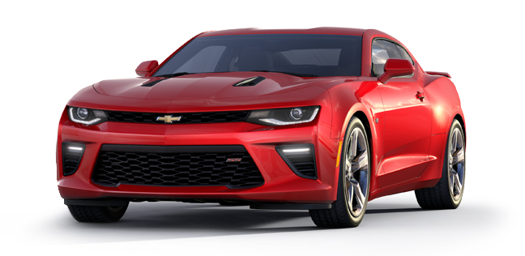
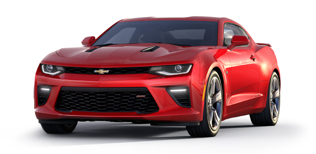

Titulo de noticia 1
Subtitulo de la noticia 1
 

Noticia 1
Siguiendo hablando de la noticia 1
Termina noticia 1

Noticia 1
Siguiendo hablando de la noticia 1
Termina noticia 1
La pelicula En busca de la felicidad es grandiosa
Siguiendo hablando de la noticia 2
Termina noticia 2
Noticia 3
Siguiendo hablando de la noticia 3
Termina noticia 3